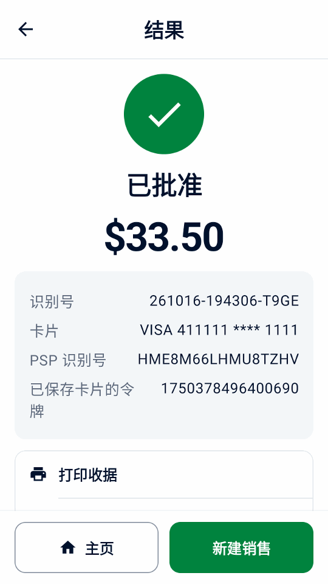

指南
体验演示
无需 Adyen 账户或支付终端，即可体验示例销售、收据和退款。
安装应用
请使用 Android 9 或更高版本的手机或模拟器。
- 在设备上打开直接下载链接，或用相机扫描此二维码：

- 在设备上打开 APK，按 Android 提示允许浏览器或文件管理器安装应用。
- 在欢迎界面选择 试用演示，然后点按 继续。
体验销售和退款
- 在首页点击 新建销售，选择一个示例商品。
- 点击 收款，核对总额后点击 支付。
- 查看收据。
- 打开 交易记录，选择该笔销售并点按 退款。选择全额退款并确认。


探索更多演示场景
- 在设置 › 模拟器中选择支付结果、延迟以及是否有打印机。开启离线批准后，可在交易记录和 终端对账中查看离线警告。
在设置 › 数据与传输中可添加示例数据或删除示例数据。示例会标为演示。 示例计入演示每日合计和报告；添加示例会以虚构咖啡店替换收据商户信息， 并在未设置标志时添加其标志；删除示例会保留您自己的商品、交易记录、设置和标志。
付款链接无需 API 凭据即可离线使用，其页面和收据都标为演示。这些二维码无法收款；点按模拟支付即可完成演示。
模拟器展示的是 Mini mPOS 的行为，而不是您的终端或 Adyen 账户支持什么。语音引导、离线批准和 Adyen 功能等只是模拟， 请在真实的 TEST 终端上测试后再使用。
演示还会在结账时提供终端小费和 Adyen Giving（开关默认关闭），并在礼品卡中提供 SVS 礼品卡。示例交易记录包含小费、捐赠、离线批准，以及为客户参考号 CUST-1042 保存的银行卡，可在令牌中 扣款。在设置 › 模拟器中设置附加费，或将部分批准（%）设为低于 100，即可试用这些流程；为 100 时，金额末尾为 139 的付款会部分批准，与 Adyen 测试卡相同。设置真实支付时，除非您选择 保留，Mini mPOS 会提示关闭这些演示功能。
继续设置真实连接
准备连接时，在设置 › 模拟器中依次点按设置真实支付和继续设置。确认 TEST 或 LIVE 会删除所有本地交易记录；示例商品和收据信息会保留，因此请在真实付款前移除示例并检查商户信息。先使用 TEST 测试。